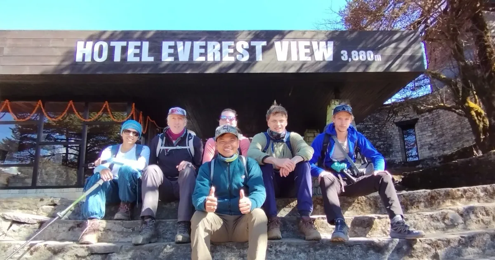
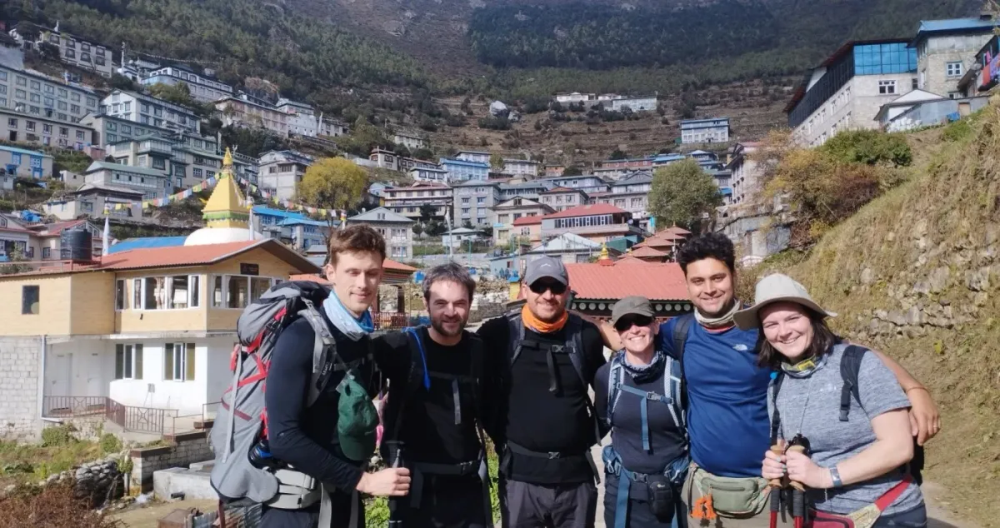
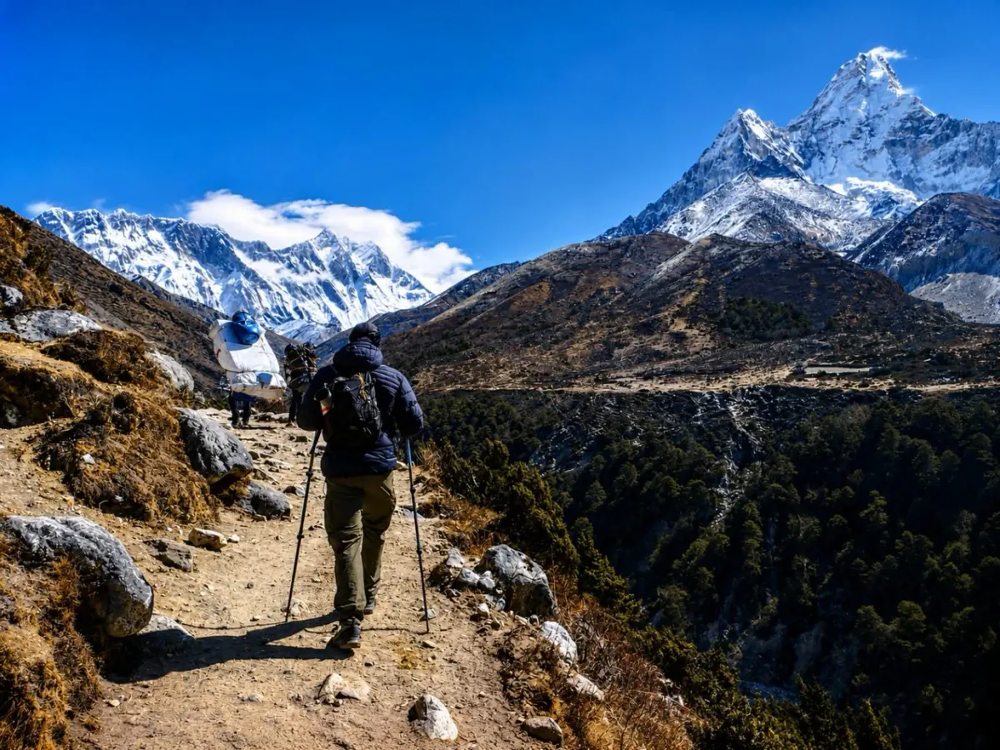
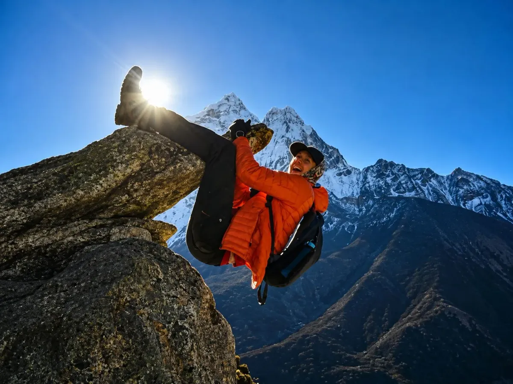
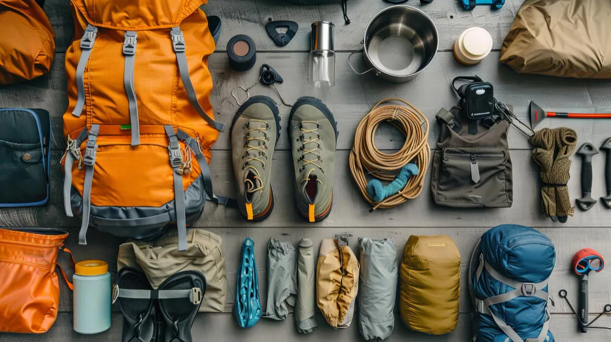

1. Mistake #1: Overpacking & Breaching the Strict 15kg Lukla Weight Limit

The most common rookie error occurs before ever stepping foot in the mountains: packing a 25-kilogram rolling suitcase stuffed with heavy jeans, cotton hoodies, duplicate electronics, and bulky toiletries.
Small twin-propeller aircraft flying into Lukla's short airstrip (such as Twin Otters and Dornier 228s operated by Tara Air, Summit Air, and Sita Air) are strictly governed by civil aviation weight safety limits. Every passenger is limited to a total of 15 kilograms (33 pounds) of baggage:
- Main Duffel Bag (Carried by Porter): Maximum 10 kg (22 lbs).
- Personal Daypack (Carried by You): Maximum 5 kg (11 lbs).
While airlines may allow you to pay an overweight luggage surcharge ($2 to $3 USD per extra kilo), during peak autumn and spring windows, overweight bags are frequently bumped from your flight and left behind in Kathmandu or Ramechhap, arriving days later in the Khumbu. Leave city clothing and non-trekking items in your hotel's free secure luggage storage in Kathmandu!
2. Mistake #2: Brand-New Unbroken Hiking Boots & Blister Disasters

Every trekking season, our guides witness eager trekkers taking their maiden steps out of Lukla airport wearing pristine, unblemished leather hiking boots pulled fresh out of the retail shoe box.
By the second afternoon—navigating the steep 600-meter pine switchbacks up to Namche Bazaar—stiff heels and rigid toe boxes begin grinding into friction points. Deep heel blisters, bloody pressure sores, and bruised toenails can turn an extraordinary bucket-list journey into a 65-kilometer march of sheer agony.
| Footwear Rule | Proper Practice | Why It Matters on the EBC Trail |
|---|---|---|
| Conditioning / Break-In | Hike at least 40–60 km in your boots 2 months prior | Molds the footbed to your arch and softens leather creases to prevent hot spots. |
| Sizing Allowance | Buy a half to one full size larger than casual shoes | Feet swell naturally at high altitude; downhill descents smash toes against front rand. |
| Sock Pairing | Wear high-density merino wool socks with seamless toes | Cushions impact, manages sweat, and prevents friction between skin and boot lining. |
| Pre-Emptive Taping | Apply Leukotape or Compeed to known friction zones on Day 1 | Stops blisters before they form; treating a blister after it tears is 10x harder. |
3. Mistake #3: Wearing Cotton ("Cotton Kills") & The 4-Layer Rule

There is a well-known axiom in high-altitude mountaineering: "Cotton Kills."
Cotton is a hydrophilic fiber that absorbs up to 27 times its dry weight in moisture. When you hike uphill with a daypack under intense Himalayan sunshine, you sweat heavily. A cotton t-shirt or cotton underwear soaks up that perspiration, holds it directly against your skin, and loses 100% of its insulating ability.
When you stop to rest at a windy col like Thokla Pass (4,830m) or Cho La, high alpine winds whip through the damp fabric. Your body heat drops instantaneously, triggering uncontrollable shivering, severe exhaustion, and acute hypothermia.
What to Avoid (The Bad List)
- Denim Jeans: Heavy, stiff when damp, zero warmth when wet, almost impossible to dry in teahouse air.
- Cotton T-Shirts & Hoodies: Retain sweat and quickly freeze into icy sheets in cold evening air.
- Cotton Socks & Briefs: Cause severe chafing, trap moisture, and invite foot fungal infections.
What to Pack (The 4-Layer System)
- Layer 1 (Next-to-Skin): 200–250g Merino wool or Capilene synthetic thermal tops and bottoms.
- Layer 2 (Active Mid-Layer): Grid fleece (Polartec Power Grid) or breathable synthetic pullover.
- Layer 3 (Static Insulation): High-loft down jacket (800+ fill power) with an insulated hood.
- Layer 4 (Weather Armor): 3-layer Gore-Tex waterproof/windproof shell jacket with pit zips.
4. Mistake #4: Bringing an Under-Rated Sleeping Bag into Unheated Lodges
A widespread misconception among first-time Himalayan trekkers is assuming mountain teahouses provide heated bedrooms.
In reality, only the communal dining hall is heated—and only for a few hours in the evening using a central potbelly stove fueled by dried yak dung. Once the stove burns out around 8:30 PM, the dining hall is locked, and you retire to your private bedroom.
Teahouse bedrooms in Dingboche (4,410m), Lobuche (4,940m), and Gorak Shep (5,164m) are constructed from uninsulated plywood or stone. Indoor bedroom temperatures frequently plummet to -10°C to -18°C (14°F to 0°F) overnight.
- The Flaw of Summer Bags: Bringing a 2-season or 3-season sleeping bag rated to 0°C or +5°C leaves you shivering awake all night, depleting the vital physical recovery your body needs to acclimatize.
- The Myth of Lodge Blankets: While lodges provide complimentary quilted blankets, during peak season these blankets run out early, and many are dusty or musty. They cannot substitute for a technical mummy sleeping bag.
- The Gold Standard: You must carry a 4-season down sleeping bag with a **Comfort Rating of -15°C to -20°C (-4°F)**. Box-wall baffled goose or duck down provides the loft needed to seal in core body heat.
You don't need to spend $600 USD buying an expedition sleeping bag at home if you will only use it once. Quality, commercially laundered -20°C down sleeping bags can be rented in Thamel for just $1.50 to $2.50 USD per day ($20 to $35 USD total for the entire trek). Add a silk sleeping bag liner for extra warmth and personal hygiene!
5. Mistake #5: Cheap Sunglasses & Ignoring Category 4 Glacier Glare
At 5,000 meters above sea level, the atmosphere is 50% thinner than at sea level, which means significantly less atmospheric filtration of ultraviolet (UV) radiation. For every 1,000 meters of elevation gained, UV levels increase by approximately 10% to 12%.
When you hike across the Khumbu Glacier or ascend the powdery snow slopes of Kala Patthar (5,545m), the surrounding glaciers and snowfields reflect up to 80% of UV rays directly into your eyes from below and from the sides.
| Eyewear Category | Light Transmission (VLT) | Suitability for Everest Base Camp |
|---|---|---|
| Category 1 & 2 (Fashion Sunglasses) | 43% – 80% light passed | Dangerous: Inadequate UV filtration; causes severe headaches and risk of photokeratitis. |
| Category 3 (Standard Polarized) | 8% – 18% light passed | Acceptable: Good for lower valley trekking (Lukla to Namche), but light leaks around the frames. |
| Category 4 Glacier Glasses (Recommended) | 3% – 8% light passed | Essential above 4,000m: Features leather or magnetic side shields to block lateral glare; prevents snow blindness. |
Photokeratitis (Snow Blindness) is a temporary but excruciatingly painful sunburn of the cornea. Sufferers describe it as feeling like hot sand poured into the eyes, rendering you unable to open your eyelids for 24 to 48 hours and requiring emergency evacuation. Always pack dedicated Category 3 or 4 wrap-around sunglasses with a secure retaining strap!
6. Mistake #6: Relying on Bottled Water vs. Reusable UV / Chemical Purification

Trekking to Everest Base Camp requires drinking 3.5 to 4.5 liters of water daily to offset rapid respiratory dehydration caused by hyperventilating thin, dry alpine air.
Some trekkers mistakenly assume they will simply purchase disposable plastic mineral water bottles at teahouses every day. This creates two massive problems:
- Severe Financial Drain: Single-use plastic bottles cost NPR 100 in Lukla, but rise to NPR 400 to 500 ($3.50–$4.00 USD) each in Gorak Shep. Buying 4 bottles a day across 12 days costs over $150 to $180 USD just for drinking water!
- Environmental Destruction & Local Bans: Sagarmatha National Park and the Khumbu Pasang Lhamu municipality have placed strict environmental bans on disposable plastic water bottles to combat mountain landfill waste.
The Smart Solution: Carry two 1-liter wide-mouth Nalgene bottles paired with an insulated bottle parka (to prevent freezing at night). Refill tap or spring water for free or buy boiled water for a fraction of the cost, and treat it using a SteriPEN Ultra UV purifier or Aquatabs (chlorine dioxide tablets).
7. Mistake #7: Cold Battery Drain, Power Bank Neglect & Socket Fees
Lithium-ion batteries hate freezing temperatures. Chemical reactions inside smartphone, camera, and drone batteries slow down drastically when temperatures dip below freezing, causing a 100% fully charged phone to plummet to 1% and shut down within 90 seconds of exposure on the summit of Kala Patthar.
Compounding this, teahouse wall outlets in higher lodges do not have free electricity. Lodges rely on solar panels with limited battery banks, charging NPR 300 to 800 ($2.50 to $6.50 USD) per device or power bank charge.
Power Mistakes to Avoid
- Relying on Small Power Banks: 5,000mAh packs charge a phone only once and lose half their capacity in the cold.
- Leaving Phones in Pack Pockets: Storing electronics in outer backpack sleeves exposes batteries to freezing ambient air.
- Carrying Multi-Device Cables Without Spares: Cold makes cheap charging cables brittle, causing wires to snap.
Battery Preservation Tactics
- Carry a 20,000–26,800mAh Power Bank: Keeps your phone and camera charged for 5–7 days without paying daily lodge socket fees.
- Sleep with Your Electronics: Stash your phone, camera batteries, and power bank inside the foot of your sleeping bag at night.
- Keep Active Phones in Internal Pockets: Use body heat from an interior fleece or down pocket to keep your phone operational on the trail.
8. Mistake #8: Underestimating the "Khumbu Cough" & Dry Valley Dust
Above 3,500 meters, the atmosphere in Sagarmatha National Park becomes exceptionally dry and thin. Combined with constant trail dust kicked up by yak caravans, human hikers, and dry moraine winds, breathing raw alpine air day after day can trigger an infamous respiratory condition called the "Khumbu Cough".
This is an agonizing, dry, hacking cough caused by dehydration of the bronchial mucous membranes. Severe fits of the Khumbu Cough can cause broken ribs or torn chest intercostal muscles, forcing trekkers to abandon their summit goals.
Packing two or three seamless merino wool Buffs or lightweight neck gaiters is the simplest and most effective prevention tool on earth. Wearing a Buff over your mouth and nose warms and humidifies every breath you inhale while filtering out airborne yak hair and silt dust. Pack throat lozenges (Strepsils) and a saline nasal spray for daily evening relief!
9. Mistake #9: Storing First Aid & Diamox in Duffels Instead of Daypacks
When you trek with a porter or support team, your main duffel bag leaves the lodge with the porters early in the morning and travels ahead of your walking pace. You will not see your duffel bag again until you reach your evening teahouse at 3:00 or 4:00 PM.
One of the most dangerous logistical errors is packing your first aid kit, Diamox (Acetazolamide), personal inhalers, or blister care inside your porter's duffel bag.
If you develop a throbbing altitude headache, twist an ankle, or begin developing severe heel friction on the steep trail between Tengboche and Dingboche, your duffel bag is miles ahead. You cannot treat your symptoms until evening, by which time a minor hot spot has ruptured into an open wound or early AMS has worsened into dangerous altitude sickness.
| Daypack Medical Item | Recommended Quantity | Immediate Trail Function |
|---|---|---|
| Diamox (Acetazolamide) | 125mg or 250mg tablets | Taken morning/evening to speed altitude acclimatization; must be on your person. |
| Blister Care (Compeed & Leukotape) | 1 pack Compeed + roll of tape | Apply to hot spots the second friction is felt during walking breaks. |
| Analgesics (Ibuprofen / Paracetamol) | 1 strip (10 tablets) | Treats high-altitude tension headaches and joint inflammation. |
| Oral Rehydration Salts (Electrolytes) | 2 sachets per day | Replenishes sodium and potassium lost through strenuous uphill sweat. |
| Antidiarrheal (Imodium / Loperamide) | 4–6 tablets | Emergency stop-gap for stomach emergencies between trail teahouses. |
10. Mistake #10: Skimping on Gloves & Hand Layering for Pre-Dawn Summons

Many trekkers pack only a single pair of lightweight fleece running gloves or cheap knit gloves purchased on the street in Kathmandu.
While lightweight gloves are comfortable during daytime hiking below Namche Bazaar, they are dangerously inadequate for the pre-dawn summit push up Kala Patthar (5,545m) or crossing the windy moraine to Base Camp.
At 4:30 AM in Gorak Shep, ambient temperatures routinely drop to -15°C to -20°C (0°F to -4°F), compounded by 30-knot Himalayan wind chill. Gripping frozen aluminum trekking poles siphons warmth straight out of your fingers. Within 20 minutes, trekkers with inadequate gloves lose fine motor function, risk frostnip, and must turn back in tears.
The Two-Glove System (Mandatory)
- Layer 1: Touchscreen Liner Gloves: Snug-fitting merino wool or Powerstretch fleece gloves worn all day. Allows you to take photos on your smartphone without exposing bare skin to freezing wind.
- Layer 2: Insulated Windproof Mittens or Heavy Gloves: Primaloft-insulated or down mittens with a waterproof/windproof shell worn over the liners during cold mornings and high passes. Mittens keep fingers together for shared warmth.
Chemical Hand Warmers (Lifesavers)
- Pack 3 to 4 pairs of disposable air-activated hand warmers (such as HotHands). Slipping a chemical heat pack inside your mittens on the ascent of Kala Patthar guarantees warm, functional hands for taking sunrise photographs of Mount Everest.
11. Mistake #11: Choosing the Wrong Daypack Size & Heavy Backloads
Your personal daypack is your mobile survival station for 6 to 8 hours every day. Choosing the wrong size or packing it improperly creates chronic shoulder pain and fatigue.
- Too Small (15L–20L): Unable to accommodate a 2-liter water reservoir, down jacket, rain shell, fleece layer, first aid kit, camera, and trail snacks. Trekkers end up tying jackets to the outside where they get wet or blown away.
- Too Large (50L–60L): Encourages overpacking. Carrying 10 to 12 kilograms on your back across steep altitude switchbacks exhausts your legs, reduces oxygenation, and drastically increases your risk of developing altitude sickness.
The ideal daypack size for Everest Base Camp is 30 to 35 Liters featuring a structured internal frame, padded ergonomic hip belt (which transfers 80% of pack weight off your shoulders directly onto your pelvis), and an integrated waterproof rain cover. Keep your total daypack weight strictly between 5.0 and 6.5 kilograms (11 to 14 lbs) including water!
12. Mistake #12: Poor Hygiene Logistics: Biodegradable Wipes & Khumbu Belly Prevention
Running water in teahouse bathrooms freezes solid above Dingboche. Taking hot bucket showers becomes impractical, uncomfortable, and physically risky (getting wet in drafty, unheated washrooms at -5°C invites severe head colds and hypothermia).
Failing to pack dedicated hygiene supplies leads directly to "Khumbu Belly"—gastrointestinal bacterial infections caused by unwashed hands touching food or dirty trail railings.
The "Dry Shower" Kit
- Biodegradable Wet Wipes (2–3 packs of 30): The primary method for personal bathing from Pangboche to Gorak Shep. Keep a pack in your sleeping bag at night so they don't freeze into solid ice blocks!
- Pocket Alcohol Hand Sanitizer (2 bottles): Use religiously before touching food, after using teahouse toilets, and after handling money.
- Quick-Dry Microfiber Towel: Medium size; dries in hours when hung inside your bedroom.
Sanitation Essentials
- Toilet Paper (2 rolls): Teahouse restrooms do not provide free toilet paper. Pack your own in a ziplock bag to keep it dry.
- Small Trowel & Waste Ziplocks: Pack out all hygiene wipes; never discard synthetic wipes in wilderness latrines or nature.
- Travel-Size Dry Shampoo: Great for freshening up hair without washing in freezing water.
13. Mistake #13: Buying Everything at Home vs. Smart Thamel Gear Rentals
Many international travelers spend $2,000 to $3,000 USD at high-end outdoor retailers before flying to Nepal, purchasing high-altitude down parkas, heavy duffels, and sub-zero sleeping bags that will sit in a home closet for the next decade.
Conversely, other budget travelers make the opposite mistake: purchasing ultra-cheap counterfeit knock-off gear from street vendors in Kathmandu, ending up with fake "Gore-Tex" jackets that leak in the first rainfall or "down" jackets stuffed with synthetic chicken feathers that offer zero warmth.
| Gear Item | Recommendation | Best Strategy & Price Reference |
|---|---|---|
| Hiking Boots & Daypack | Buy at Home | Must fit your foot anatomy perfectly and be thoroughly broken in before departure. |
| Merino Base Layers & Socks | Buy at Home | Personal hygiene items; genuine 200g+ merino wool is essential for sweat management. |
| Expedition Down Jacket (-15°C) | Rent in Kathmandu | Rent authentic 800-fill down jackets in Thamel for $1.50–$2.50/day ($20–$35 total). |
| Four-Season Sleeping Bag (-20°C) | Rent in Kathmandu | Rent professional mummy down bags for $1.50–$2.50/day; add a personal silk liner. |
| Trekking Poles & Crampons/Microspikes | Buy/Rent in Thamel | Quality lightweight poles and microspikes cost $15–$25 USD to purchase in Kathmandu. |
14. Complete Packing Matrix: Duffel Bag vs. Daypack Division

To eliminate morning packing confusion and prevent luggage weight penalties, use this definitive compartmentalization blueprint:
What Goes in Your Porter Duffel (10kg Max)
- 4-Season Down Sleeping Bag & silk liner.
- Spare clothing layers (extra merino tops, camp fleece pants, thermal bottoms).
- Spare trekking socks (3–4 pairs) and quick-dry underwear.
- Camp shoes (lightweight down booties, crocs, or runners for teahouses).
- Heavy-duty toiletry kit, extra wet wipes, and backup toilet paper.
- Chargers, spare cords, and general luggage locks.
What Stays in Your Daypack (5kg Max)
- Original Passport, trekking permits, insurance policy, and cash.
- Hardshell waterproof Gore-Tex jacket and rain pants.
- Active mid-layer fleece or ultralight packable down jacket.
- 2 Liters of drinking water + purification tablets / SteriPEN.
- Category 3 or 4 sunglasses, sun hat, and high-SPF sunscreen / lip balm.
- Personal medical kit (Diamox, blister tape, painkillers) and hand sanitizer.
- Smartphone, 20,000mAh power bank, camera, and energy snacks.
15. Seasonal Adjustments: Spring vs. Autumn vs. Winter Packing
While the baseline gear checklist remains consistent throughout the year, packing must adapt to specific seasonal micro-climates in Sagarmatha National Park:
| Trekking Window | Seasonal Weather Profile | Mandatory Packing Adjustments |
|---|---|---|
| Spring (March – May) | Warmer valley days (15°C–18°C), dusty lower trails, afternoon haze, cold nights at Gorak Shep (-10°C). | Pack extra buffs and saline nasal spray for heavy trail dust; lightweight sun hoodies; Category 4 sunglasses for bright melting snow. |
| Autumn (Late Sept – Nov) | Pristine clear skies, crisp dry air, freezing night temperatures (-15°C), firm ground. | Heavy 800-fill down jacket; box-wall -20°C sleeping bag; touchscreen liner gloves and heavy insulated mittens. |
| Winter (Dec – Feb) | Severe arctic conditions (-20°C to -25°C), high winds, icy moraines, empty trails. | Mandatory microspikes / slip-on crampons for frozen trail sections; hot water bottle for sleeping bag; heavy expedition mittens and down booties. |
| Monsoon (June – August) | Warm, wet lower valleys (Lukla to Namche), frequent rain, cloudy passes, leeches. | Durable rain poncho covering daypack; waterproof pack liners; salt/anti-leech spray; quick-dry synthetic apparel instead of heavy down. |
16. Why Igloo Himalaya Treks Gear Audits Guarantee Summit Success
At Igloo Himalaya Treks, we know from decades of guiding high-altitude expeditions that mountain safety begins long before you board the plane to Lukla.
To ensure that none of our clients suffer from avoidable gear failures, we include a comprehensive pre-trek gear audit in every Everest Base Camp expedition package:
Our Pre-Trek Gear Protocols
- In-Person Kathmandu Gear Inspection: On Day 1 in Kathmandu, your expedition leader inspects your boots, layers, sleeping bag, and daypack piece by piece.
- Complimentary Thamel Gear Sourcing: If you are missing an essential item, our Sherpa guides personally escort you to trusted Thamel gear shops to rent authentic equipment at local wholesale rates.
- Free 100L Expedition Duffel Bag: Every client receives a durable, water-resistant Igloo Himalaya Treks duffel bag to keep for the trek.
- Down Jacket & Sleeping Bag Provision: High-quality 4-season -20°C down sleeping bags and down jackets are provided upon request.
Group Medical & Safety Gear
- Certified Pulse Oximeters: Twice-daily blood oxygen saturation and pulse checks.
- Comprehensive Expedition Medical Kit: Stocked with emergency altitude medications, antibiotics, and trauma care.
- Satellite Comms & Emergency O2: On-trail satellite communication and bottled medical oxygen on standby for high-pass emergencies.
- Ethical Porter Support: We enforce strict 20kg porter load caps, provide comprehensive medical insurance, and ensure full warm-gear provision for every porter.
Frequently Asked Questions (FAQ) About Everest Base Camp Packing
Select a category below to explore expert answers to the most common questions travelers ask about EBC Packing Mistakes to Avoid:
General & Planning

Ready to Experience the Himalayas?
Whether you are preparing for high-altitude trekking, cultural circuits, or alpine summit expeditions, start planning a bespoke journey tailored to your fitness, travel season, and style.